5560B analogue control panel
- Path
- Descriptions > 55 ELECTRICAL EQUIPMENT > 5560 INSTRUMENT PANEL > 5560B analogue control panel
- Kind
- system description
- Applies to
- all engines; all production periods
- Interactive page
- https://sloeber94.github.io/elrnDB-a147/en/#/3022530
Applies to: all engines; all production periods
SPECIFICATIONS
INTRODUCTION
The instrument panel on the 147 is fitted in the B-CAN network and takes the name NQS (instrument panel connector)
The signals involving the systems in the C-CAN network are available to the NQS from the Body Computer connector via an interface known as a Gateway.
The task of the NQS is to the display the vehicle operating parameters and inform the user of possible failures in the electronic on board systems.
There are two basic versions of N.Q.S. the LOW LINE type N.Q.S. and the HIGH LINE type N.Q.S.
The LOW LINE version has two LCDs in TN technology
The HIGH LINE version has a TN technology LCD and a DSTN technology DOT display
The instrument panels also come with either a grey background or a black background to match the interior fittings
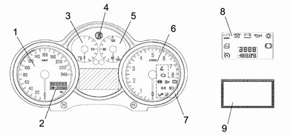
1 - Speed indicator 2 - LCD TN 1 (milometer/headlamp alignment) 3 - Fuel gauge 4 - Alfa Romeo logo 5 - Water temperature gauge 6 - Rev counter 7 - Warning lights 8 - Warning lights and LCD TN 2 (clock/outside temperature) 9 - LCD matrix
The top view is illustrated below.
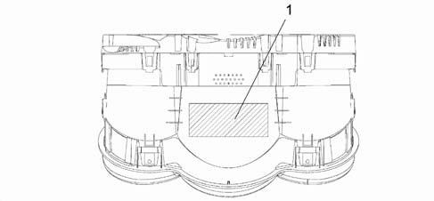
1 - Label (Fiat design no./VDO design no./Fiat bar code/production date/Alfa Romeo class)
The rear view is illustrated below.
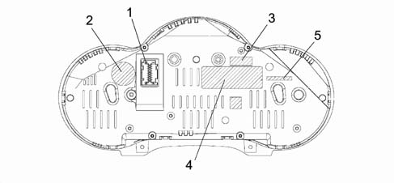
1 - 18 pin connector 2 - Fiat Auto S.p.A. badge 3 - Supplier marque (VDO) 4- Supplier management marque (containing the Fiat design no., the VDO design no. and the VDO bar code) 5 - Marking for recycling
PIN OUT
The diagram below illustrates the PIN OUT.
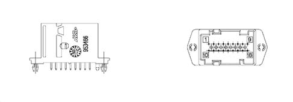
1 - INT. +15 from fuse F37 2 - +30 from fuse F53 3 - B-CAN H 4 - B-CAN L 5 - Headlamp aglinment actuators signal reference 6 - Dipped headlamps positive from fuse F13 for headlamp alignment 7 - Earth 8 - Negative signal from trip computer button on steering column switch unit 9 - Signal from controls on PCS (left panel) (zero km, mode -) 10 - Negative signal i.e. warning light failure/EOBD from N.C.M. 11 - Signal from P.C.S. (headlamps up, headlamps down) 12 - Inertia switch intervention signal FPS (NA) 13 - C.A.B. failure warning light negative signal (AIR BAG) 14 - Passenger Air Bag disabled warning light negative signal 15 - Driver's seat belt not fastened negative signal 16 - Signal from controls at P.C.S. (MODE MODE +) 17 - Engine oil level sensor supply (JTD only); Engine oil temperature sensor signal (for GTA only) 18 - Signal from engine oil lever sensor (JTD only)
INDICATOR PANELS
The diagram below shows the indicator panels.
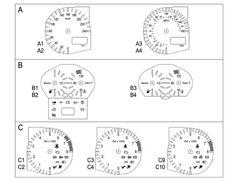
PANEL A
A1 - speed indicator and milometer with grey background and display ni km/h
A2 - speed indicator and milometer with black background and display in km/h
A3 - speed indicator and milometer with grey background and display with dual scale km/h and MPH
A4 - speed indicator and milometer with black background and display with dual scale k/h and MPH
PANEL B
B1 - fuel gauge, engine temperature gauge, direction indicators, warning lights and LCD2 with grey background for LOW LINE panels
B2 - fuel gauge, engine temperature gauge, direction indicators, warning lights and LCD2 with black background for LOW LINE panels
B3 - fuel gauge, engine temperature gauge, direction indicators with grey background for HIGH LINE panels
B4 - fuel gauge, engine temperature gauge, direction indicators with black background for HIGH LINE panels
PANEL C
C9 - rev counter and warning lights with grey background for petrol models with ASR
C4 - rev counter and warning lights with black background for 1.6 HIG 2.0 petrol ASR models
C5 - rev counter and warning lights with grey background for JTD models with ASR
C6 - rev counter and warning lights with black background for JTD models with ASR
C9 - rev counter and warning lights with grey background for petrol models with VDC
C10 - rev counter and warning lights with black background for petrol models with VDC
Table of warning lights and location in nqs
Name | Colour | Symbol (see diagram) | Display HIGHLINE | Display LOWLINE | Display in position |
|---|---|---|---|---|---|
Oil pressure | red | 1 | symbol + message in matrix display | LED | Centre panel |
Engine coolant temperature | red | 2 | LED and symbol + messagey in matrix display | LED | Engine coolant temperature panel |
Handbrake applied | red | 3 | LED and symbol + messagey in matrix display | LED | Rev counter panel |
Brake circuit failure: - insufficient brake fluid - EBD failure (with ABS warning light on) | red | 4 | LED and symbol + messagey in matrix display | ||
Brake pad wear | red | 5 | symbol + message in matrix display | LED | Centre panel |
Alternator failure | red | 6 | symbol + message in matrix display | LED | centre panel |
Fuel reserve | amber | 7 | LED | LED | fuel level panel |
Outside lights failure | amber | 8 | message in matrix display | LED | centre panel |
ABS | amber | 9 | LED and symbol + messagey in matrix display | LED | rev counter panel |
AIR-BAG | red | 10 | LED | LED | rev counter panel |
Passenger air bag disabled | amber | 11 | LED | LED | rev counter panel |
Engine management failure (JTD only) | red | 12 | LED and symbol + messagey in matrix display | LED | rev counter panel |
EOBD (engine management failure) - petrol versions | amber | 12 | LED and symbol + messagey in matrix display | LED | rev counter panel |
Right direction indicator | green | 13 | LED | LED | centre panel |
Left direction indicator | green | 14 | LED | LED | centre panel |
Side lights on | green | 15 | LED | LED | rev counter panel |
Main beam headlamps | blue | 16 | LED | LED | rev counter panel |
Door/s open | red | 17 | Symbol + message in matrix display | LED | centre panel |
Immobilizer (CODE) | amber | 18 | Symbol + message in matrix display | LED | centre panel |
Seat belt | red | 19 | LED | LED | centre panel |
TC / ASR | amber | 20 | LED and symbol + messagey in matrix display | LED | rev counter panel |
VDC | amber | 21 | LED and symbol + messagey in matrix display | LED | rev counter panel |
Inertia swith on | amber | 22 | symbol + message in matrix display | LCD (2): 'FPS on' | DOT matrix (HL) LCD (2) (LL) |
Cruise Control | green | 23 | symbol + message in matrix display | LED | Centre panel |
Ice danger signal | amber | 24 | symbol + message in matrix display | LCD (2) Outside temp. flashing | DOT matrix (HL) |
Selespeed failure | red | 25 | symbol + message in matrix display | --- | DOT matrix (HL) |
Info-telephone repetition: incoming call SMS | green | 26 | symbol + message in matrix display | --- | DOT matrix (HL) |
Speed limit warning | red | 27 | symbol + message in matrix display | --- | DOT matrix (HL) |
Speed limit warning for Arab market | red | 28 | message in matrix display | ---- | DOT matrix (HL) |
Heater plugs | amber | 29 | symbol + message in matrix display | LED | Centre panel |
Water in diesel filter | amber | 30 | symbol + message in matrix display | --- | DOT matrix (HL) |
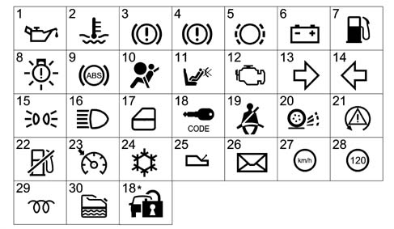
(*) serigraphy modified starting from 09/03
Display information table
LOW version | HIGH version | |
|---|---|---|
DISPLAY (1) LCD TN | • milometer • headlamp alignment • engine oil level (JTD) • light adjustment | • milometer • headlamp alignment |
DISPLAY (2) LCD TN | • clock • outside temperature • inertia switch indication • buzzer volume adjustment | Not present |
DISPLAY (2) LCD DOT – DSTN | Faults (symbol + message) Clock Date Outside temperature Engine oil temperature (GTA) Trip Computer Radio Info/Telephone/Navigation Set up menu Service Engine oil level (JTD) Light dimmer Robot gearbox info |
Fault diagnosis
The instrument panel can be diagnosed using the diagnostic equipment in the Network (Examiner or Examiner plus).
The diagnostic socket is located in the EOBD, the dialogue line consists of the B-CAN line.
The following operations can be carried out through diagnosis:
- Display of possible errors in the instrument panel
- Programming milometer mileage
- Setting mileage for SERVICE function (replacing instrument panel)
- Active diagnosis in order to check the operation of the instrument panel
COMPOSITION
The N.Q.S. consists of:
- Instrument panel on suitable versions in front of the driver with B-CAN interface
- MODE buttons (mode+ and mode-) in the left panel on the driver's side
- Km zeroing button, in the left panel on the driver's side
- Front headlamp adjustment button, in the left panel on the driver's side
- Trip Computer zeroing button, on the right wiper lever
OPERATION
The task of the instrument panel connector is to:
- Receive and transmit information at the B-CAN network
- Manage the subsiduary functions
- Receive and manage signals outside the network
- Display the vehicle operating stage
The diagram illustrates the main connections for the Instrument Panel Connector
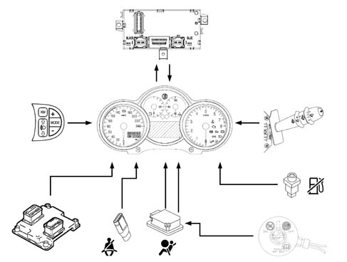
The instrument panel connector functions are listed below
SPEEDOMETER
The speedometer shows speeds of between 0 km/h and 240 km/h.
The scale is in km/h, on variants which have an imperial system there is a dual scale.
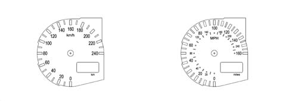
The instrument panel receives information concerning the speed expressed in km/h via the B-CAN line and then displays it using the index which is moved by a P/P motor
The speed information comes from the NBC, which calculates the speed using the wheel rpm signal from the NFR (ABS) and the measurement of the wheel circumference memorized in the NBC
For speeds of between 0 and 4 km/h, the index remains stationary i the rest position. At higher speeds, the speed is signalled.
Programming in 'miles'
The NQS has a correction factor for the display in MPH which has been inserted by the manufacturer and cannot be modified.
Error conditions
In the case of an error, the speedometer indicator is positioned at zero (rest position) and remains in that position as long as the fault persists.
Speed limit (high-line version only)
On the High Line version instrument panel a speed limit can be set, using a Menu, with a range of between 30 - 250 km/h 920 - 160 mph) in steps equal to 1 km/h (1 mph).
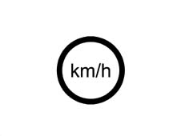
The limit selection is closed circle (no continuous rolling: when the limit is reached it returns back). When the selection has been made, with the function activated, if the speed of the vehicle exceeds the pre-set limit by + 1 km/h, a warning message is displayed on the matrix showing the + symbol and an acoustic warning is sounded (Alarm beep 1).
The alarm signal remains activated (message up to a maximum of 20 s, after which only the symbol remains) until the vehicle speed is 5 km/h below the speed which activated the alarm
EXAMPLE
If a speed limit of 170 km/h is selected, the signal (message + symbol + alarm beep) is activated when the speed of the vehicle reaches 171 km/h and is deactivated when the speed is 166 km/h.
Speed limit for arab market
Irrespective of the speed limit set by the customer, for Arab markets there is a warning, signalled by the matrix display, for a speed limit of 120 km/h.
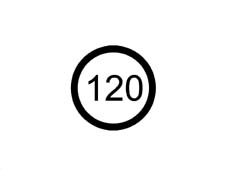
If the function (set by the manufacturer at the end of the line) is activated when the vehicle speed exceeds the limit of 120 km/h by + 1 km/h, then the matrix display shows the warning message + the special symbol and an acoustic signal is emitted (Alarm beep 3).
The alarm signal remains activated (message up to a maximum of 20s after which only the symbol and the auditory alarm remain) until the vehicle speed is 4 km/h below the speed at which the alarm was activated.
MILOMETER
The display has 7 segments and is configured almost like a DOT matrix in order to produce a similar configuration to the matrix display on the HIGH LINE type panel.
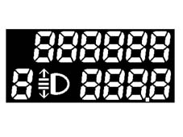
The panel receives information, from the B-CAN line, concerning the space travelled processed by the NBC and information coming from the NFR and increases the milometer and the trip meter
The km travelled are displayed in an LCD (1) which also displays information concerning the headlamp alignment.
The light in the display is green and is produced by an SMD LED.
The LCD has 6 digits (with 7 segments for each digit) for the 'total' figure and 4 digits plus a decimal point for the 'partial' figure. The zeros which are not important are not displayed in order to restrict the numbers illustrated to the significant ones.
By pressing the 0 km' button (outside the NQS) for 1x < t < 3 x the partial counter is zeroed, but the mileage counter is not, nor the trip distance, nor the Service mileage.
The instrument memorizes the total km so that if the battery (+30) is disconnected no more than +/- 1 km is lost. whilst for the partial mileage counter, the total memory is lost.
The instrument is supplied by the factory with the possibility of resetting the total mileage counter only once during the first 200 km (or 125 miles).
The possibility of this zeroing is shown on the LCD by the letter 'H' at the first digit (7 segments) on the left.
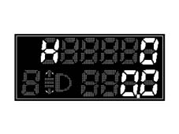
If the operation described previously is carried out before 200 km is reached, the total mileage counter is zeroed (the partial mileage recorder is zeroed, the Trip meter is zeroed, the Service mileage is zeroed) if the '0 km' button is pressed for t > 10 s the letter H disappears.
If this operation is not carried out when 200 km is reached/exceeded, the letter H disappears and the km travelled are maintained and displayed and the possibility of zeroing the total mileage counter is lost.
Milometer behaviour with key switched off
Nothing is visible on the display with the key switched off; in this case the 0km button has no function. when one of the front doors (left/right) is opened/closed, the milometer display lights up and displays the partial and total mileage information for around 10 seconds.
Programming in miles
The unit of measurement for the total mileage counter cannot be modified through the set up function, it remains on what was set by the manufacturer.
Error conditions
In the case of an error, the milometer displays the last valid figure until it receives a new valid figure.
REV COUNTER
The rev counter shows figures of between 0 and 8000 rpm (petrol engines) and between 0 and 6000 rpm ( JTD engines).
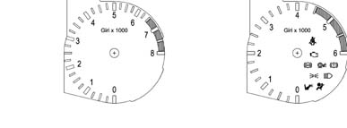
The panel receives information, via the B-CAN line, concerning the engine speed supplied by the NCM and displays it through a pointer moved by a P/P motor.
The panel processes the engine rpm data without corrections with a constant time of 200ms so that the response at zero RPM - end of scale RPM is less than 2 seconds
Position of index at key off
At key off the index is positioned at 0 (0 rpm).
Error cases
In the case of an error, the index is positioned at ZERO (start of the scale) until the error condition disappears.
Alarm signals
If the indicator reaches the red danger zone, if the panel is partly lit, then the brightness increases.
Engine coolant temperature gauge
The engine coolant temperature gauge displays figures beween + 50 - 130
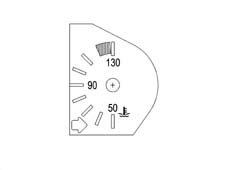
The panel receives information, via the B-CAN line, concerning the engine temperature from the NCM which has an actual temperature range of -40 - +215 ° C (the range displayed by the index is +50 - +130) the NQS displays the temperature via an indicator moved by a P/P motor.
Index / warning light behaviour at key on
Ton = Temperature value measured at key on.
Toff = Temperature value corresponding to the position of the index at key off (which normally corresponds to the actual temperature value at key off). If the conditions defined in 'd' are verified (burst of heat: 2 mins inhibition) the temperature value corresponding to the index position is different from the actual engine coolant temperature value.
Summary table
Situation at key on | Reading on the panel | Overheating warning light |
|---|---|---|
a) Ton = Toff | Ton | indication of current state ( = previous) |
b) Ton < Toff | Ton | Indication of current stage |
c) Ton > Toff (< 120 ± 1 °?) | Toff | Maintenance of previous state (warning light off) |
d) Ton > Toff (burst of heat) | Toff | If Ton =120 1 ° C and Toff < 120 ± 1 ° C :the warning light is enabled when it comes on after t =2 min. If Ton > Toff > 120 ± 1° C: Previous stage maintained (warning light off) |
If conditions 'a' and 'B' are verified at the key on the indicator moves to the position corresponding to the temperature measured at the key on (Ton) following the logic in the graph below
In particular:
- if T = 50 ° C the pointer should be positioned on the first reference/graduation of the scale.
- if T > 50 ° C, the pointer should be positinoed on the reference corresponding to the temperature measured.
If conditions 'c' and 'd' (burst of heat) are verified at the key on, the temperature value corresponding to the position of the pointer at the key off is indicated; later on, the pointer reaches the position corresponding to the atual temperature in an (effective) time of 2 mins.
In addition, if the temperature at the key on is Ton = 120 ± 1° C (and Toff < 120 ± 1° C), the temperature value corresponding to the position of the pointer at the key off is indicated and later on the pointer reaches the start of the red sector in a time of 2 mins (during this time the overheating warning light should not come on); later on, if the engine management control unit sends/continues to send the warning light on signal, the instrument panel brings the pointer to the end of the scale (t = 1s) and lights up the overheating warning light and activates an alarm beep 1 type auditory warning.
If the temperature is variable during the two above mentioned minutes, the new objectis is updated (after the key on). If at the previous key off there was an engine coolant temperature warning light on signal (Toff > 120 ± 1° C) and at the subsequent key on these conditions persisted, the pointer will move to the end of the scale and the engine coolant engine coolant temperature. This remains valid as long as the warning light on conditions persists.
Operating logic for engine coolant temperature gauge at key on.
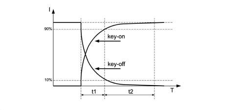
I = Pointer position T = Time (s) t1 = 1.5 s + 0.5 / -0 t2 = 3s t1+t2 = 5s max.
Pointer behaviour at key off
In the key off condition, the pointer is positioned on the reference represeting zero.
Temperature gauge and warning light operating logic
Operating logic of the engine coolant temperature gauge in normal operating conditions
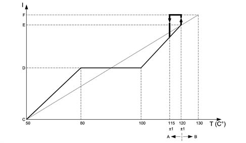
I = Scale reading T = Temperature A - Pointer operation by instrument panel B - Warning light operation by c.c.m. C - Start of scale D - Centre of scale E - Start of red sector F - End of scale
For temperatures equal to T =?50 ° C, the pointer should be positioned on the first reference of the scale (start of scale).
For temperatures between 50 -?80 ° C the pointer should increase in a linear fashion.
For temperatures between 80 -?100 ° C (normal operation) the pointer should remain in a stable position in the centre of the scale.
For temperatures between 100 - 120 ° C (increasing) and 115 - 100 ° C (decreasing) the pointer should move in a linear fashion.
For temperatures equal to T = 120 ± 1 ° C, the pointer should be positioned at the start of the red sector of the scale
For temperatures equal to T = 122 ° C the pointer should reach the position corresponding to the start of the red sector and as soon as the engine management control unit sends the warning light on signal, it should move to the end of the scale (t = 1 s); the engine coolant temperature overheating warning light engine coolant temperature.
In addition:
- if the warning light on signal coming from the c.c.m. remains in the ON state, the pointer should still remain at the end of the scale and the warning light should remain on;
- if the c.c.m. sends the warning light off signal (when the temperature goes below the level which is usually equal to T = 115 ± 1° C), the instrument panel should instantly switch off the engine coolant temperature overheating warning light and the pointer (t = 1s) should find itself in the position corresponding to the actual temperature value.
The hysteresis is usually equal to 5 ° C, i.e. if, for example, the warning light comes on at 120 ° C, it should go out at 115 ° C.
Engine coolant overheating warning light
The panel receives information, via the B-CAN line, concerning the switching on/off of the warning light.
The sofware strategy which regulates the switching on/off of the engine coolant temperature overheating wrning light and the operation of the pointer at the end of the scale when the temperature limits/levels are reached, both for normal operation and in the case of bursts of heat, is located inside the engine management control unit.
Diagnosis / error conditions
At each key on the instrument panel warning light is activated (check stage); after a time of t 4 s. the CCM/NCM sends the instrument panel the instruction to switch off the warning light. During this check stage the behaviour of the pointer should be as defined in the previous paragraph ('pointer behaviour at key on'). Through the effect of the warning light coming on, the pointer is not positioned at the end of the scale during the check stage.
If the ignition is switched on and the conditions for switching on the warning light exist (engine coolant overheating and warning light already on when the ignition was switched off previously), then the CCM keeps the command to switch on the warning light activated and the instrument panel continues to keep the warning light on and position the pointer at the end of the scale.
DIAGNOSIS OF LINE CONNECTED TO TEMPERATURE SENSOR
The system checks for irregular conditions. Therefore if there is a faulty connection between the temperature sensor and the NCM, the latter switches on the injection/EOBD failure warning light in the NQS.
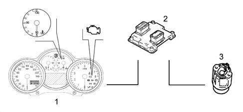
1 - Instrument panel 2 - Engine management connector 3 - Sensor
In the case of a failure, the engine coolant temperature gauge should be positioned at zero (rest position) and remain in this position as long as the fault persists.
FUEL GAUGE
The fuel gauge shows the fuel level as a %
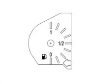
The instrument panel receives information, via the B-CAN line, concerning the fuel level expressed in % points of the tank capacity calculated by the NBC, this information is then represented by a pointer moved by a P/P motor.
Graphic information received by nbc
Actual fuel level in litres / reading on instrument
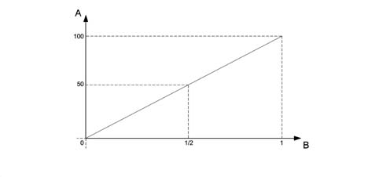
A - % full B - Reading at NQS
Behaviour of pointer at key on
At key on the pointer shows the fuel level, according to the information from the NBC, with the positioned reached according to the logic in the graph below. About 5 s. later on, in normal operating conditions (vehicle being driven) in order to prevent incorrect readings due to the fuel moving around in the tank, the NBC imposes a damping function.
Fuel gauge operating logic at key on and at key off.
I = Pointer position T = Time t1 = 1.5s + 0.5 / -0 t2 = 3s t1 + t2 = 5 s max
Pointer behaviour at key off
During the key off stage, the pointer is positioned on the zero (first reference) according to the logic in the graph
FUEL RESERVE WARNING LIGHT
The NQS receives the reserve warning light on / off signal via the B-CAN network from the NBC
Fault diagnosis
The system checks for irregular conditions. If the NQS receives an error message via the B-CAN network, the pointer positions itself at the start of the scale (rest zone / key off) and the warning light flashes at a frequency of 1 Hz. DC 50%.
The warning light also flashes if:
- 4 s after the key on the Body Computer is disconnected from the B-CAN line
- the instrument panel connector is disconnected from the B-CAN line.
Indicator recovery logics (stepping motor)
If steps are lost by the P/P motors for the indicators, due, for example, to: transportation/movement, installation of the panel on the vehicle or as a result of extreme mechanical and electro-magnetic stresses which occur during operation or the vehicle stopped on the road.
There is a 'return to zero' logic for all the indicators (partial or complete return) at each key on and key off operation.
There is a lso a 'return to zero' logic for all the indicators (complete return) at each the battery is reconnected (+BATT.)
When the indicators are in the 'normal operating' position, this logic guarantees that any movements/oscillations of the indicators are not visible to the user.
ENGINE OIL LEVEL GAUGE (only for JTD engine)
The function of signalling the engine oil level is designed to show the status of the engine oil level during starting by means of a display. The instrument is equipped with a special circuit for the operation of a hot wire oil level sensor. The display takes place: on the LOW LINE version in the (milometer) disply and on the HIGH LINE version in the reconfigurable matrix display.
Milometer display signal
At the key on, the word 'OIL' is displayed in the lower part of the milometer for 10 seconds and the quantity of oil present in the engine is shown in the upper part by six digital squares lighting up/going out. With all the 'squares' lit up, the oil level is maximum.
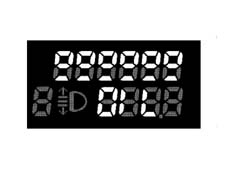
The squares in the upper part gradually going out indicates a decrease in the oil level. When the oil is at the minimum level, the squares in the upper section are all off and the dashes underneath flash at a frequency of 0.5 Hz. If the oil level is above the critical value, beyond the maximum level, the words 'HIGH OIL' are displayed for 10 seconds. if there is a break or a short circuit in the detection circuit at the key on, then the word 'OIL' flashes for 10 seconds at a frequency of 0.5 Hz and the dashes disappear.
Reconfigurable matrix display signal
The operating logic is the same as the one described for the LOW LINE except for the display mode. The display at the key on is defined as at MMI. After the measurement, the references are lit up with the same logic as the 'o's on the LOW LINE version. If the oil level is below the minimum level, the bars are all switched off and the 'minimum oil level' message is displayed for 10 secs., also all the bars are empty and the insufficient oil level symbol appears in the special warning light area.
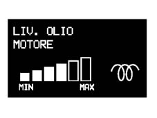
If the oil level is above the maximum level, the bars are all lit up and the 'maximum oil level' message is displayed for 10 secs. If an oil level sensor failure is detected, the message 'oil level sensor failure' is displayed for 10 secs.
Acquisition of the signal
The counter is zeroed when the battery is initially connected.
At the first key on, the oil level reading is taken (time - 1 sec.) and the result is shown on the display.
After the reading the counter is set at 20 minutes. During the key on period the counter decreases by one unit per minute up to a minimum value of 2 minutes.
At the next key off the counter decreases from two to zero.
At the next key on and, only if the counter is at zero, the system reads and memorizes the new value.
If the counter is still >0 at the key on, a comparison is made with the previous reading and, if:
- the current reading is greater than or equal to the previous one by 3 segments, effective references of the display, the value read is acquired and memorized and the counter is reset at 20 starting the decrease as previously;
- the current reading is less than 3 segments, effective references of the display, the reading is not memorized and the level corresponding to the previous reading is displayed. The counter is reset at 20 starting the decrease again.
Engine OIL TEMPERATURE gauge (GTA only)
This function involves the display of the engine oil temperature, acquired directly from the instrument by means of a special sensor as well as the display of an overheating warning;
It is shown on the reconfigurable matrix display
The engine oil temperature is acquired through an analogue input and then displayed through a bar chart:
- 0 Bars: Temperature between -40ºC and 60ºC
- 1 Bar: Temperature between 60ºC and 80ºC
- 2 Bars: Temperature between 80ºC and 100ºC
- 3 Bars: Temperature between 100ºC and 120ºC
- 4 Bars: Temperature between 120ºC and 140ºC
- 5 Bars: Temperature above 140ºC
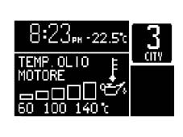
The switching on/off of each individual element of the bar graph is managed by a hysteresis logic which makes it possible to prevent the image flickering.
Analogue digital conversion table
The Analogue/Digital conversion for the NTC type engine oil level is:
Sensor output voltage | no. of bars | Note |
|---|---|---|
> 468 mVolt | 0 Bars | Insufficient Engine Oil alarm |
412 mVolt - 468 mVolt | 1 Bar | |
362 mVolt - 412 mVolt | 2 Bars | |
300 mVolt - 362 mVolt | 3 Bars | |
225 mVolt - 300 mVolt | 4 Bars | |
162 mVolt - 225 mVolt | 5 Bars | |
<162mVolt | 6 Bars | |
<105 mVolt | - | Max engine oil level |
If the temperature exceeds 150ºC for 2 minutes then the 'ENGINE OIL OVERHEATING' fault message is displayed and the symbol is shown in the dedicated icon area. The display of this fault requires checking the state of the engine whilst running.
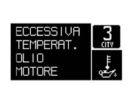
WARNING LIGHTS
Specifcations
The warning lights may be switched on or off by the NQS via the command from the B-CAN network, for the systems which are connected to the C-CAN network the messages are available at the B-CAN network via the NBC gateway or through the direct management of the component connected to the NQS.
In the main, the warning lights are switched on when a fault is verified, but some warning lights are also switched on at the key on for a maximum of 4 secs to indicate the check on the system.
On the HIGH LINE version some warning lights, which are switched on during the check stage by the LOW LINE NQS, are not switched on at the key on, but only if there is a fault
'Intelligent' type warning lights are only used for the AIR BAG system failure warning light
The circuit is as follows:
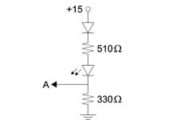
A = Towards the control unit
Operating
Minimum engine oil pressure
On Low Line versions, the display shows a symbol lit up by the LED and on High Line versions there is a symbol plus a DOT matrix message
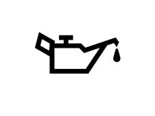
SWITCHING ON
1. Low Line version The warning light comes at at the key on for 4 seconds (check stage) and is switched on when the fault signal coming from the NCM via the NBC gateway is received.
2. High Line version The warning light is only switched on when the fault appears by a command coming from the NCM via the NBC gateway and if the engine speed is above 700 RPM for longer than 1.5 secs
SWITCHING OFF
1. Low Line version The warning light is switched off after the check stage or after the fault disappears when the message coming from the NCM via the NBC gateway is received.
2. High Line version When the message from the NCM via the NBC gateway is received, if the NQS is disconnected from the B-CAN network and if the engine speed is below 200 RPM
Alternator failure
On Low Line versions, the display shows a symbol lit up by the LED and on High Line versions there is a symbol plus a DOT matrix message
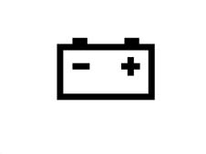
SWITCHING ON
1. Low Line version The warning light comes on for 4 seconds at the key on (check stage) and remains on when the fault signal is received from the NBC
2. High Line version The warning light only comes on when the fault appears through a command coming from the NBC and if the engine speed is above 550 RPM for longer than 1.5 secs.
SWITCHING OFF
1. Low Line version The warning light goes off after the check stage and after the fault disappears when the message coming from the NBC is received
2. High Line version When the message is received from the NBC, if the NQS is disconnected from the B-CAN network and if the engine speed is below 200 RPM
Engine management failure
On all versions the display is a symbol lit up by an LED, on the High Line version there is also a symbol plus a DOT matrix message if there is a fault
The NCM is connected directly to the NQS
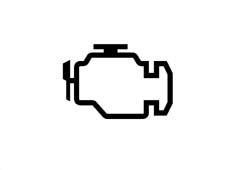
SWITCHING ON
The warning light is operated directly by the NCM (direct connection between NQS and NCM)
On High Line versions only, the DOT matrix symbol is repeated when the fault command is received and if the engine speed is above 700 RPM for 1.5 secs.
SWITCHING OFF
The warning light is operated directly by the NCM (direct connection between NQS and NCM)
On High Line versions only, there is a DOT matrix symbol when the information that the fault has disappeared is received
The aim of the system is:
- to monitor the efficiency of the system;
- to signal an increase in emissions due to a vehicle malfunction;
- to signal the need to replace deteriorated components.
Code system failure
On Low Line versions the display shows a symbol lit up by the LED and on High Line version there is a symbol in the DOT matrix
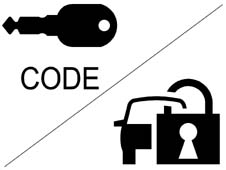
SWITCHING ON
1. Low Line version The warning light comes on at the key on for 1 second and is then kept on if the fault signal coming from the NBC is received
2. High Line version The warning light only comes on if the fault appears through a command coming from the NBC
3. All versions The warning light may be on constantly or flashing according to the state of the NBC (see CODE system operation)
SWITCHING OFF
The warning light goes out when the command is received from the NBC or if the NQS is connected from the B-CAN network
Heater plugs (jtd engine jtd
On Low Line versions the display shows a symbol lit up by the LED and on High Line version there is a symbol in the DOT matrix
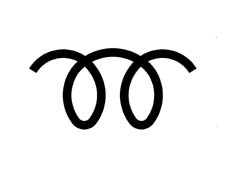
SWITCHING ON
Low Line version The warning light comes on at the key on when the signal coming from the NCM is received
High Line version The warning light comes on at the key on when the signal coming from the NCM is received
SWITCHING OFF
The warning light goes out when the preset temperature is reached, when the command is received from the NCM or if the NQS is disconnected from the B-CAN
FAILURE
Low Line version The warning light comes on and flashes.
High Line version The symbol and the 'pre-heating failure' message are displayed.
Engine coolant temperature overheating warning light
On all versions the display shows a symbol lit up by an LED, on the High Line version there is also the symbol plus a DOT matrix message if there is a fault
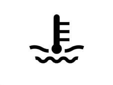
SWITCHING ON
The warning light comes on fo 4 seconds at the key on (check stage) and remains on when the fault signal is received from the NCM
On High Line versions only the symbol is repeated on the DOT matrix when the fault command is received
SWITCHING OFF
The warning light goes off after the check stage or when the fault disappears when the message from the NCM is received
Or if the NQS is disconnected from the B-CAN network
Fuel reserve warning light
On all versions the display is a symbol lit up by an LED.
SWITCHING ON
The warning light comes on for 4 seconds at the key on (check stage) and remains on when the fault signal is received from the NBC
In addition, when the sensor/wiring failure message is received from the NBC the warning light flashes at a frequency of 1 Hz -DC50%
SWITCHING OFF
The warning light goes out after the check stage or when there is a signal from the NBC
Or if the NBC is disconnected from the B-CAN network
Or if the NQS is disconnected from the B-CAN network
Side lights
On all versions the display is a symbol lit up by an LED.
SWITCHING ON
The warning light comes on when the side lights on message is recieved from the NBC
The warning light stays on even after the key off for the PARKING LIGHTS function
SWITCHING OFF
The warning light goes off when the side lights off signal is received from the NBC or if the NBC is disconnected from the B-CAn network or if the NQS is disconnected from the B-CAN line
Main beam headlamps
On all versions the display shows a symbol lit by an LED.
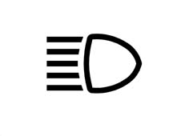
SWITCHING ON
The warning light comes on when the message is received from the NBC that the main beam headlamps are on
The warning light remains on even at the key off for the FOLLOW ME HOME function
SWITCHING OFF
The warning light goes out when the NBC informs that the main beam headlamps have been switched off or if the NBC is disconnected from the B-CAN network or if the NQS is disconnected from the B-CAN line
Direction indicators
On all versions the display is a symbol lit up by an LED.
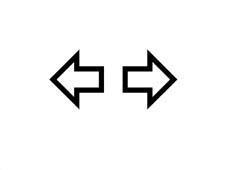
SWITCHING ON
The warning lights come on when the direction indicators on message is received from the NBC (right or left indicator) or when the NBC receives the hazard warning lights on message, in this case the warning lights remain on even with the ignition OFF.
SWITCHING OFF
The warning lights go out when the direction indicators (right or left) off message is received by the NBC or when the NBC receives the hazard warning lights off message
In addition, the warning lights go out if the NBC is disconnected from the B-CAN network or if the NQS is disconnected from the B-CAN line
Doors open warning light
On Low Line versions, the display shows a symbol lit up by the LED and on High Line versions there is a symbol plus a DOT matrix message
SWITCHING ON
The warning light comes on when the signal that one or more doors is open is received from the NBC
SWITCHING OFF
The warning light goes out when the message is received from the NBC that the (all) the doors are closed, in addition it goes out if the NBC is disconnected from the B-CAN network or if the NQS is disconnected from the B-CAN line.
Exterior lights failure
On Low Line versions the display shows a symbol lit up by the LED and on High Line version there is a symbol in the DOT matrix
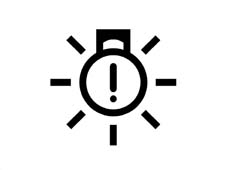
SWITCHING ON
The warning light comes on when a signal is received from the NBC that one or more of the exterior lights is faulty
SWITCHING OFF
The warning light goes out when the message is received from the NBC that (all) the exterior lights are working properly, in addition it goes out if the NBC is disconnected from the B-CAN line or if the NQS is disconnected from the B-CAN network
Handbrake applied/brake fluid level/ebd failure warning light
On all versions the display shows a symbol lit up by an LED, on the High Line version there is also the symbol plus a DOT matrix message if there is a fault
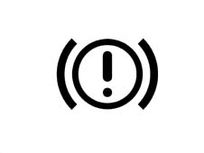
SWITCHING ON
The warning light comes on for 4 seconds at the key on (check stage) or when the signals from the NBC listed below are received:
Warning light when handbrake applied signal is received
Warning light and DOT matrix information (HIGH LINE) when insufficient brake fluid level message is received
Warning light and DOT matrix information (HIGH LINE) when EBD failure message is received
Warning light and DOT matrix information (HIGH LINE) if the NBC is disconnected from the B-CAN network
Warning light and DOT matrix information (HIGH LINE) if the NQS is disconnected from the B-CAN network
Warning light and DOT matrix information (HIGH LINE) if the NFR is disconnected from the B-CAN network
SWITCHING OFF
The warning light goes out after the check stage or if the messages listed below are received.
When the message is received from the NBC that the handbrake is released (if the warning light was on for this function only).
When the message is received from the NBC that the brake fluid level is okay (if the warning light was on for this function only).
When the message is received from the NBC that the EBD system is okay (if the warning light was on for this function only).
Abs system failure
On all versions the display shows a symbol lit up by an LED, on the High Line version there is also the symbol plus a DOT matrix message if there is a fault
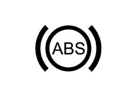
SWITCHING ON
The warning light comes on for 4 seconds at the key on (check stage) or when the failure message is received from the NFR, on the High Line version the information is also displayed on the DOT matrix and the warning light also comes on in the following conditions:
Warning light and DOT matrix information (HIGH LINE) if the NBC is disconnected from the B-CAN network
Warning light and DOT matrix information (HIGH LINE) if the NQS is disconnected from the B-CAN network
Warning light and DOT matrix information (HIGH LINE) if the NFR is disconnected from the B-CAN network
SWITCHING OFF
The warning light goes out after the check stage or if the message is received from the NFR that the system is okay.
Asr/vdc warning light
The warning light is displayed by the serigraphed symbol lit up by an LED and a symbol plus a DOT matrix message
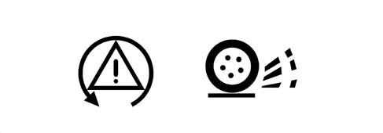
SWITCHING ON
The warning light comes on for 4 seconds at the key on (check stage) or when a message an operating/failure message (light flashing/on constantly) is received from the NFR (see ABS system with ASR and VDC), the warning lights also come on in the following circumstances:
Warning light and DOT matrix information (HIGH LINE) if the NBC is disconnected from the B-CAN network
Warning light and DOT matrix information (HIGH LINE) if the NQS is disconnected from the B-CAN network
Warning light and DOT matrix information (HIGH LINE) if the NFR is disconnected from the B-CAN network
SWITCHING OFF
The warning light goes out after the check stage and when the message is received from the NFR that the system is okay
The panel receives information, from the NBC, via the B-CAN network, concerning the switching on and off of the ABS, EBD, ASR and VDC warning lights.
If, when there is a message at the B-CAN network to switch these warning lights on, the LEDs should not come on, the NQS should memorize this fault and on the Low Line version LCD (1) and on the High Line version matrix display an LED ERROR warning should appear (Low version) or an ABS ERROR WARNING LIGHT (High version). This signal is displayed for 20 seconds, both during the check stage and normal operating conditions.
This fault can be recognized using the diagnostic equipment.
Air bag failure warning light
On all versions the display shows a symbol lit by an LED.
The Air Bag is connected directly and the NQS command to switch on the warning light is not introduced in the CAN network.
SWITCHING ON
The warning light is lit up directly by the Air Bag control unit if there is a fault (see Air Bag operation)
In addition, the warning light comes on when the NQS is disconnected from the Air Bag control unit CAB
SWITCHING OFF
The warning light is switched off by a direct command from the Air Bag control unit (CAB)
Passenger air bag disabled warning light
On all versions the display shows a serigraphed symbol lit up by an LED
The Air Bag is connected directly and the NQS command to switch on the warning light is not introduced into the CAN network
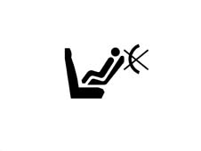
SWITCHING ON
The warning light is switched on directly by the Air Bag control unit (see Air Bag operation)
SWITCHING OFF
The warning light is switched off by a direct command from the Air Bag control unit (CAB)
Seat belt warning light
On all versions the display shows a serigraphed symbol lit up by an LED
The seat belts switch is connected directly to the NQS and the command to switch on the warning light is not introduced into the CAN network
The 'seat belts' warning light signals the 'failure to fasten the seat belt' as follows:
- at the key on, if the driver has not fastened their seat belt, the warning light comes on constantly.
- at the key on, if the seat belt was fastened before the key on, the warning light remains off.
- if the seat belt was unfastened whilst driving, the warning light comes on constantly
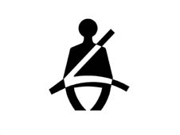
SWITCHING ON
The warning light comes on directly through an N.C. switch in the driver's belt
SWITCHING OFF
The warning light goes out when the switch in the driver's seat belt is opened.
Automatic transmission failure warning light
The warning light is displayed through a symbol plus a message on the DOT matrix only
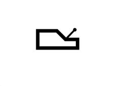
SWITCHING ON
The warning light comes on when the command is received by the NCR (robotized gearbox connector)
In addition if the NCR is disconnected from the B-CAN line
SWITCHING OFF
The warning light goes out when the command is received by the NCR
Brake pad wear warning light
On Low Line versions, the display shows a symbol lit up by the LED and on High Line versions there is a symbol plus a DOT matrix message
SWITCHING ON
The warning light comes on when the fault signal is received from the NBC.
SWITCHING OFF
The warning light goes out when the signal is received from the NBC that the pads are okay.
Cruise control on warning light
On Low Line versions the display shows a symbol lit up by the LED and on High Line version there is a symbol in the DOT matrix
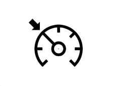
SWITCHING ON
The warning light comes on when the signal is received from the NCM via the C-CAN and B-CAN networks that the function is switched on
SWITCHING OFF
The warning light goes out when the signal is received from the NCM that the Cruise Control is switched off
The warning light also goes out if the NQS is disconnected from the B-CAN line and if the NCM is disconnected from the C-CAN network.
CLOCK/DATE
Specifcations
The clock is shown in the DISPLAY (2), namely in the segment LCD on the LOW version and in the matrix display on the HIGH version.
In 24 h mode, the reading is in hours and minutes and ranges from 0:00 to 23:59.
In 12 h mode, the reading isin hours and minutes and rages from 1:00 to 12:59; the 'AM' reading changes to 'PM' when the clock moves from 11:59 to 12:00 during the day and conversely the reading changes from 'PM' to 'AM' when the clock moves from 11:59 to 12:00 at night.
Each time the battery is reconnected or the process reset, the clock shows 0:00 (or 12:00 in 12 h mode) and the two points between the hours and minutes flash at a frequency of 0.5 Hz - DC 50%.
Clock adjustment
By pressing the 'mode' button the hours/minutes flash at a frequency of 0.5 Hz - DC 50%.
The buttons (+ e -) are used to adjust the hours as follows:
Pressing the button for < 0.05 secs, nothing happens
Pressing the button for between > 0.05 secs and < 2 secs, the digit changes by 1 step/sec
Pressing the button for between < 2 secs and < 4 secs, the digit changes by 5 steps/sec
Pressing the button for > 4 secs, the digit changes by 10 steps/sec
Pressing 'mode' changes from hours to minutes and the same method for correcting the hours can be used to change the minutes.
When the 'mode' button is pressed again, the adjustment is accepted and the minutes stop flashing.
During the adjustment of the hours/minutes, the seconds return to zero to confirm the figure set.
The digits (:) do not flash during the modification; the digits (:) start to flash when the adjustment is confirmed.
If not button is pressed during the adjustment for 10 secs, the instrument moves on to the standard screen without accepting the last setting made and the previous time is displayed.
The NQS reacts to the pressing and not the release of the button.
The clock is only displayed with the ignition switched ON.
The time can only be set/adjusted with the ignition switched ON and the vehicle speed below 3 km/h.
Clock (low line)
The 12 h mode is only activated by the supplier and cannot therefore be adjusted by the customer. 'AM' or 'PM' are not displayed in this mode. To enter the clock set up mode, press the 'mode' button.
Clock (high line)
The 12/24 h mode is activated through the menu and can therefore be adjusted by the user.
'AM' or 'PM' is shown in the 12 h mode.
To enter the clock set up mode, press the 'mode' button.
The summer/winter setting can be selected using the menu. Changing from OFF to ON adds 1 hour (summer-time activated). Changing from ON to OFF subtracts 1 hour (daylight saving time activated).
Data (high line only)
The date ranges from 1999 to 2099. The format is represented on the display in DD MM (day, month)
The indication of the year in progress is not displayed. Leap years are calculated automatically.
When the date is being updated, impossible dates are not represented.for example for a month with 30 days, the 31st cannot be displayed.
Inertia switch intervention signal
At each key off the inervention of the inertia switch is signalled to the user.
This signal is shown on the display 2 until the switch is reset manually.
The segment display (LOW line) shows the warning 'FPS on' flashing at a frequency of 0.5 Hz d.c. 50% on (FPS = Fire Prevention System).
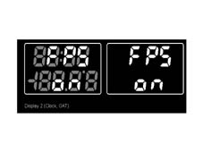
The matrix display shows the warning 'Inertia switch on' + symbol
PANEL LIGHT
Specifcations
The panel lighting is divided into different areas, as follows:
For the Low line version:
- speedometer graphics lighting (activated only by the +lights signal)
- graphics lighting: fuel gauge, engine coolant temperature gauge, rev counter, (activated only by the +lights signal)
- milometer display (1) lighting and clock/text display (2).
For the High line version:
- speedometer graphics lighting (activated only by the +lights signal)
- graphics lighting: fuel gauge, engine coolant temperature gauge, rev counter, (activated only by the +lights signal)
- milometer display (1) lighting
- matrix display lighting. (2) --> main information / messages area.
- matrix display lighting. (2) --> area dedicated to warning signals.
The graphics are lit in red.
The milometer (Low and High versions) and clock/text displays (Low version) are lit in red.
The matrix display is also lit in red for the information/message display area; the 32 x 32 pixel area (bottom right) is lit in green, red or yellow (for the ideogram warning lights).
Operation
The LEDs are activated when they receive the 'side lights on' signal from the NBC via the B-CAN line. The instrument can activate the LEDs when the NQS is separated from the B-CAN (with the + of the headlamp alignment corrector).
The panel lighting can be deactivated, with the sole exception of the speedometer scale (for the High Line version only).
For a partial deactivation, (with the side lights on), press the 0Km' button for 4 < t < 10 secs (the partial mileage counter is not zeroed in this case) (N.B.: time greater than partial zeroing).
If one of the readings not lit up enters the warning stage (e.g. fuel reserve, engine coolant temperature > 100° C, engine speed at the start of the red sector, DOT matrix warning) the entire panel will be lit up and remain activated until the warning stage is over.
After the key on and the +lights on, the entire panel lighting will remain activated.
Dimming
The intensity of the light can be adjusted using the buttons 'MODE +' AND 'MODE -' buttons (outside the NQS) if not working via the MENU
The brightness can never be reduced to zero
The dimming value (0-10) is transmitted by the NQS at the B-CAN network so that the brightness level set can be transmitted to the other connectors.
If the side lights are deactivated, the display lighting is 100% and they can be dimmed (high line only).
The failure signal LEDs cannot be adjusted/dimmed
On the HIGH line version the matrix display dedicated to the display of the failure ideograms cannot be adjusted/dimmed
Display dimming function on the low line version
The adjustment operation is displayed on the MILOMETER DISPLAY (1) as follows:
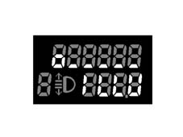
Minimum lighting (2.5%)
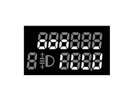
Lighting examples of 25%.
Display dimming function on high line version
The adjustment operation is displayed on the matrix, as follows:
Lighting example of 70%.
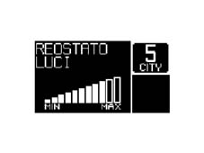
Brightness adjustment table
The adjustment which regulates the correspondence between the level of brightness and the bar display is defined in the table below:
Number of 'o's visible (Low Line) | Number of bars visible (High Line) | Brightness % | Note |
|---|---|---|---|
1 | 1 | 2.5 | minimum brightness > 0 |
1 | 2 | 5 | |
2 | 3 | 10 | |
2 | 4 | 15 | |
3 | 5 | 20 | |
3 | 6 | 25 | |
4 | 7 | 40 | |
4 | 8 | 55 | |
5 | 9 | 70 | |
5 | 10 | 85 | |
6 | 11 | 100 | maximum brightness |
Low Line:
- If the side lights are off (+lights off), only the two displays will be lit up at 100% brightness,
- If the side lights are on (+lights on), the graphics and the display will be lit up simultaneously at the defined adjustment value. The brightness value can be adjusted later according to the definitions in the above mentioned table.
High Line:
- If the side lights are off (+lights off), the displays are lit up and can be adjusted.
- If the side lights are on (+lights on), the displays and the graphics are lit up and can be adjusted
Behaviour at key on: at the key on with the +lights on, the graphics are always lit up at the value adjusted.
Behaviour at key off: at the key off the adjustment level set is memorized and used for the next key on.
Disconnecting the battery or resetting the system does not cause the value memorized to be lost. When the battery is reconnected, the value set should be the one adjusted prior to the battery being disconnected.
HEADLAMP ALIGNMENT ADJUSTMENT
The headlamps can be adjusted from 0 to 3 usig the '^' and 'v' buttons (outside the panel in the left panel); the value set is memorized and shown in the milometer display together with the symbol.
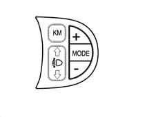
The NQS receives and sends the increase signal (CAF+) or decrease signal (CAF-) from the switch in the left panel to the headlamp adjustment module (incoroporated in the actual NQS).
The adjustment module controls the presence of the positive headlamp supply coming from fuse F13 and produces an adjustment signal, sending it to the headlamp aglinment control motors electronic circuitry. The instrument output signal is a voltage value which is interpreted by the actuator fitted on the headlamp;
No adjustment is possible at the KEY OFF. At the KEY ON the last value memorized is maintained, but the number and the symbol are not displayed in the panel until the dipped headlamps come on.
ACOUSTIC FUNCTIONS
Specifications
There is a buzzer in the NQS which emits the following auditory signals.
Button operation: confirmation that one of the buttons has been operated known as a roger-beep.
The NQS receives a signal that the roger beep has been activated from the other connectors via the B-CAN network
The following buttons produce an auditory signal:
- front electric windows controls
- left panel controls
- centre panel controls with the exception of the HAZARD button
- climate control controls
Signal for the following types of alarm:
- Alarm beep 1
- Alarm beep 2
- Alarm beep 3
The NQS manages the type of alarm according to the signals coming from:
- B-CAN network
- systems connected directly to the panel
- functions inside the panel
The NQS produces the corresponding auditory signal as described below.
The buzzer management logic is as follows:
- roger-beep: frequency 1.5 kHz, duty cycle 50%, duration 50ms
- alarm beep 1: frequency 4 kHz, duty cycle 50%, duration 2 s - modulation equal to 1Hz dc 70%
- alarm beep 2: frequency 4 kHz, duty cycle 50%, duration dependent on the function - modulation 2Hz dc 50%
- alarm beep 3: frequency 4 kHz, duty cycle 50%, duration dependent on the function
The NQS manages the buzzer activation priorities, which are:
- Roger Beep: 3
- Alarm beep 1: 2
- Alarm beep 2: 1
- Alarm beep 3: 0 MAXIMUM PRIORITY
Danger signals (high line & low line)
The danger signals are:
- In the case of 'doors open' and if the speed of the vehicle is above 3 km/h for longer than 4 s, there is an alarm beep 2 type auditory signal.
- In the case of 'handbrake applied' and if the vehicle speed is other than zero for longer than 4 s, then an alarm beep 2 type auditory signal is produced.
If there are faults, an alarm beep 1 type auditory signal is produced.
If the speed limit set using the Menu is exceeded, an alarm beep 1 type auditory signal is produced.
If the speed limit defined for the Arab market is exceeded then an alarm beep 3 type auditory signal is produced.
If the outside temperature is below a pre-set level then an alarm beep 1 type auditory signal is produced.
Adjustment of buzzer volume
On the LOW line version the buzzer volume (for the Roger Beep function) can be activated or deactivted by pressing the MODE button.
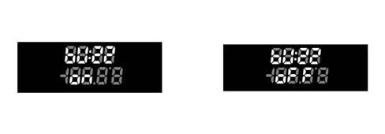
On the High line version the buzzer volume can be adjusted to 4 different levels. For the Roger Beep function the buzzer volume can be adjusted from 100% to 0% as defined in the table; to signal an alarm, the buzzer volume can be adjusted to a mininum value of 10%, as defined in the table, even if the off level is selected.
Buzzer volume settings
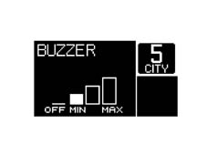
OUTSIDE TEMPERATURE READING
The outside temperature is displayed on the:
- LOW version in the segment display (2)
- HIGH version on the matrix display
The panel receives information, via the B-CAN network, concerning the temperature expressed in degrees centigrade from the NBC.
If the outside temperature is being shown on a segment display (2), if the temperature value received is higher, as an absolute value, thatn the figure shown by two digits (-99/+99) it displays ± 99° C with a sign consistent with the sign received.
The '+' sign is not displayed for positive temperatures.
If the temperature is equal to '0' then the '-' sign is not displayed.
Below are some examples.
HIGH LINE VERSION
Screen with TRIP Computer function activated - Automatic Transmission (Selespeed)
The first screen shows the reading in degrees centigrade
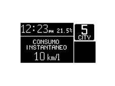
The second shows degrees Fahrenheit
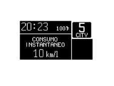
LOW LINE VERSION
The first screen shows the reading in degrees centigrade.
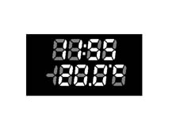
The second shows degrees Fahrenheit
Error case
LOW LINE VERSION:
In the case of a sensor failure, in place of the temperature value, the NQS should display the following reading: '--°F' or '-.-° C'.
HIGH LINE VERSION:
In the case of a sensor failure, in place of the temperature value, the NQS should display the following warning: '---' in place of + 'F' and 'C'.
'ice danger' warning display
Specifcations
In order to avert the user to the possible presenceof ice on the road surface, if the outside temperature measured is Text = 3 ° C, then an ice warning cycle is displayed.
This is only carried out once after the outside temperature is found to be equal to Text = 3° C and is only repeated when the outside temperature reaches + 6° C and then goes down to +3° C (hysteresis of 3° C). ,the buzzer does not intervene either if the temperature does not reach + 6° C and then go down to +3° C.
If the outside temperature measured at the key off is equal to T =?3° C, then the display will show the video screen at the key off for the first 10s and then the 'warning cycle' will commence.
If the 'warning cycle' is interrupted by a failure message (greater priority) then it is resumed at the end of the above mentioned failure.
Warning cycle
LOW version: the temperature reading is displayed, flashing for 10 seconds at a frequency of 1 Hz, D.C. 50 % ON; the buzzer produces an Alarm beep 1 type auditory warning
HIGH version: the temperature reading is displayed (flashing - frequency 1 Hz d.c.50% ON) and the message 'snow symbol + ice danger warning' appears for 10 seconds.; the buzzer produces an Alarm beep 1 type auditory warning
At the end of the warning cycle:
- the message disappears, the temperature reading stops flashing,
- the 'snow symbol' is positioned in the display area dedicated to symbols (as long as the condition persists of T = ?3° C) and the screen prior to the fault is reproposed.
Display of water in diesel filter signal (jtd engine only)
Specifcations
In order to warn the driver of the possible presence of dampness in the diesel filter, the message and symbol are shown on the display
TRIP COMPUTER (HIGH line version only)
Specifcations
The TRIP computer function is only available on the HIGH LINE version and displays the trip information on the matrix.
There are two modes, Main TRIP and TRIP B divided as described below and activated by using the special button:
Main TRIP |
|---|
Instant consumptioin |
Average consumption |
Range |
Average speed |
Journey time |
Journey distance |
TRIP B |
|---|
Average consumption - B |
Average speed - B |
Journey time - B |
Journey distance - B |
When the TRIP function is activated (transition from NON ACTIVATED to ACTIVATED state) the NQS produces and auditory feedback (roger beep); when the data is zeroed by keeping the button pressed for >4 seconds a further auditory feedback signal is produced.
The counting/updating of TRIP figures only takes place whilst the engine is running, i.e. only when the on board equipment receives a consumption signal from the engine management control unit (cut-off condition included, i.e. nil consumption and engine speed above 300 rpm).
The interval between zeroing the TRIP data once and the next time is defined by the term 'mission' and this zeroing can take place as follows:
By pressing the button (for a time equal to t > 4 secs): the zeroing through a manual resetting operation for one of the TRIP figures involves resetting all the others (with the exception of the RANGE and the INSTANT CONSUMPTION) after which each figure is then counted independently.
Resetting the Main TRIP also resets the TRIP B. Resetting the TRIP B is independent.
Resetting the mileage counter (shown in the specific segment display) does NOT produce a TRIP reset function.
Automatic:
- when the 'journey distance' information reaches the limit equal to 4999.9 (km or miles)
- when the journey time reaches the total limit of 99.59
- each time afterthe battery is reconnected
- for TRIP B only: when the time elapsed between the key off and the next key on is longer than two hours.
Scales and units of measurement
The scales which can be shown on the matrix display are as follows:
Units of measurement | ||
|---|---|---|
Parameters | Syst. Metric dec. | Syst. imperial system |
Instant consumptioin | km/l - l/100km | mpg |
Average consumption | km/l - l/100km | mpg |
Range | km | mile |
Average speed | Km/h | mph |
Journey time | hh:mm | hh:mm |
Journey distance | km | Mile |
Units of measurement key
Km/l = kilometres per litre
L/100km = litres per 100 kilometres
Km/h = kilometres per hour
hh:mm = hours and minutes
mpg = miles per gallon
mile = mile
mph = miles per hour
One UK gallon = 4.55 litres
One mile = 1.6 km
Operation
The instrument panel receives the following information to calculate these scales:
Input for instrument panel | Received from |
|---|---|
Instant distance | Body Computer |
Fuel level (% in relation to a full tank) | Body Computer |
Fuel reserve level | Body Computer |
Fuel tank capacity | Body Computer |
Vehicle speed | Body Computer |
Instant consumption (in litres/hour); | Engine control ECU |
Journey time counted | Internal clock |
The calculation of the Trip data is carried out by the instrument as follows:
Journey distance
The distance travelledby the vehicle since the start of the mission is shown, i.e. from when the user reset the function by pressing the dedicated button. The reading is consisten with the display on the total mileage counter.
When the maximum possible distance figure is reached, the mileage display is automatically zeroed. There is a total TRIP reset function for later on.
The distance is displayed with the following specifications:
- range of between 0 and 4999.9 km (or miles)
- resolution equal to 0.1 km (or miles)
- display update: every 0.1 km (or miles)
The function is activated by the key on.
Journey time
The journey time indicates the time elapsed since the start of the mission, i.e. from when the user reset the function by pressing the TRIP button or the automatic reset.
Each time the battery is reconnected or at the start of each mission, the display shows '00:00', after which the value calculated is displayed.
At each key on, the value memorized at the previous key off is displayed, with the exception of the the TRIP B which is automatically zeroed after stopping for 2 hours.
If the vehicle is stopped with the engine switched off (key off) the counting of the journey time is stopped but not zeroed and resumes as soon as the vehicle sets off again (next key on - engine running).
The function is activated by the key on with the engine running.
The mission time is displayed in hh mm with the following specifications:
- range of between 00:00 to 99:59
- resolution equal to 1 min.
- display updated every minute
- data updated every second
When the maximum possible value is reached (99:59), the journey time display is automatically zeroed. The TRIP is reset later on.
Average speed
The average speed is calculated at the start of the mission, as a ratio between the journey distance and the journey time.
Vm = journey distance/journey time
The calculation is only carried out with the engine running.
Each time the battery is reconnected and at the start of each mission, the display shows '----' for the first 10 seconds after which the value calculated is displayed.
At each key on the value memorized at the previous key off is displayed with the exception of the TRIP B which is automatically reset after stopping for 2 hours.
The average speed data displayed should be equal to '----' if the following conditions prevail:
- The user has reset the function by pressing the dedicated button.
- The 'journey distance' and/or 'journey time' parameters have been reset.
The average speed is displayed with the following specifications:
- range of between 0 and 250 km/h (or 160 mph)
- resolution equal to 0.1 km/h (or miles)
- calculation accuracy : = 0.1 km/h
- display updated every 10 s ± 0.1s (10s)
Average consumption
Average consumption refers to the ratio between the distance travelled since the start of the mission and the number of litres consumed since the start of the mission.
Cm = distance travelled/litres consumed
The panel acquires the consumption signal via the B-CAN network and integrates it with the time, forming a ratio with the distance travelled since the start of the mission.
At the start of a new mission, whether it is due to the battery being reconnected or the TRIP reset, the average consumption value is initialized at the 'pre-defined average consumption standard' personalized for the vehicle / engine type.
The 'weighting' to be attributed to the above initial value is designed to prevent excessive changes in the data displayed during the first minutes of the mission.
After this the data displayed tends to present the actual mission consumption conditions.
The figure displayed is equal to '----' for the first 10 seconds after which it moves on to display the value calculated.
At each key on, the value memorized at the last key off is displayed, with the exception of the TRIP B which is automatically zeroed 2 hours after stopping.
If the vehicle is stopped with the engine running (traffic lights, etc.) then the updating of the average consumption figure becomes a function of the instant fuel consumption, as the km travelled remain fixed (nil increase).
The value is displayed with the following specifications:
resolution equal to 0.1 km/l (or mpg) (miles per gallon)
calculation accuracy: = 0.1 km/l (or mpg)
display updated every 10 s ± 0.1s
max. value indicated equal to 50 km/litre -? 2 l/100km - 99.9 mpg
min. value equal to 4 km/litre - 25l/00km - 2 mpg
Instant consumption
The instant consumption refers to the value of litres of fuel consumed by the vehicle in a given period; this data is calculated on the basis of the consumption figure transmitted by the engine management control unit. The panel acquires the consumption signal via the B-CAN network
The value displayed allows the user to appreciate the differences in consumption due to driving styles,
When the battery is reconnected, the display should be equal to '----' for the first 10 seconds, after which it should move on to display the value calculated.
To calculate the instant consumption, in order to prevent the value displayed from varying too much, the 'predefined average standard consumption' data is used, personalized for the vehicle / engine type; in the minutes which follow, gradually as the mission proceeds, the weight of the initial value loses importance and the consumption data for the new mission prevails.
With the engine running but the speed = 0, the value displayed is equal to '----'.
The value is displayed with the following specifications:
- resolution equal to 0.1 km/l (or mpg)
- calculation accuracy: = 0.1 km/l (or mpg)
- max. value indicated equal to 50 km/litre -? 2 l/100km - 99.9 mpg
- min. value indicated equal to 4 km/lire - 25 l/100km - 2 mpg
Range
The range indicates the estimated distance (in km or miles) that can be covered with the fuel currently contained in the tank and assuming that the mission will continue in the same driving style (same consumption conditions). This value is calculated using the information received from the:
Body Computer:
- fuel level (as a % of a full tank);
Engine management control unit:
- reference consumption calculated by the control unit
Value memorized in the instrument panel:
- fuel tank capacity, in litres
The range in km is calculated by multiplying the reference consumption by the number of litres of fuel in the tank or by dividing the number of litres of fuel in the tank by the average mission consumption.
Each time the battery is reconnected, the value displayed should be equal to '----' for the first 30 seconds after which it should move on to display the value calculated.
At each key on the value memorized at the previous key off is displayed.
During the mission, the updating of the range data displayed is increased in increments proportional to the difference between the value displayed and the value calculated in order to prevent excessive fluctuations.
In particular:
- if the difference between the value calculated and the value displayed exceeds 40 km, then the range variation displayed is equal to one sixth of the difference.
- if the difference between the value calculated and the value displayed is between 6 km and 39 km, then the range variation displayed is equal to 3 km
- if the difference between the value calculated and the value displayed is less than 6 km, then the range variation displayed is equal to 1 km.
In the fuel reserve condition, i.e. with the fuel reserve warning light on, and the range below 50 km, no data is transmitted to the user (but the counting of the range continues), i.e. the display shows the message + 'warning - refilling necessary' symbol for 20 secs and then the warning '----' appears.
Even if the TRIP screen is not activated, when the above mentioned limit is reached (range less than 50 km) the message is displayed in accordance with the logic described above and then the screen is returned to the moment there is a problem.
If the fuel tank is filled up, then the new range is shown immediately.
If, when the fuel has been introduced, the range is still below the limit (50 km) then no data is displayed and the warning '----' persists.
The refilling information is acquired as described in the chapter dealing with the fuel gauge.
If the vehicle speed is < 3 km/h with the engine running (e.g. at traffic lights) the last value before the stop is displayed for a time of 3 minutes; after which the reading '----' is displayed.
The display resumes normally when the vehicle speed is > 3 km/h. The range figure is updated taking into account the fuel consumed during the stop and taking into consideration the driving style prior to the stop (last 5 minutes).
The range calculation is always activated
The range figure is displayed with the following specifications:
- calculation accuracy: = 1 km (or miles)
- resolution: 1 km (or miles)
- display updated every 30 s ± 0.1s
- max. value reading equal to 1999 km (miles)
- min. value equal to 50 km (miles), after which '----' is displayed
Recovery
If there is no connection to the B-CAN network, all the TRIP scales display the not available message in place of the figure together with descriptions for each scale.
If the speed sensors are faulty, all the TRIP scales show dashes '----' together with descriptions of each scale (km for range, km/h for average speed, etc.).
If the fuel sensor is faulty, the dashes are displayed '------' for the Range and Average consumption scales only, together with descriptions for each scale
If the sensor situation returns to normal, the counting continues according to the appropriate modes for each piece of information and none of the figures acquired prior to the failure are reset and now new mission is started.
DISPLAYS FOR SELESPEED (HIGH LINE ONLY)
The NQS receives information on the gear engaged from the NCR (robotized gearbox connector) and displays it in the DOT matrix in the following format:
- Gear no.: 1,2,3,4,5,R,N this information is supplied by the gaer engaged signal coming from the NCR
- 'City' selection this information is supplied by the gear change mode signal
If this message is not available or if the gearbox is not the SELESPEED type, the NQS does not display the gear engaged.
The gear engaged is also displayed at the key off as long as the matrix remains lit up (see paragraph on the matrix)
In addition, the number showing the gear engaged flashes when the NCR determines that the gear selected by the driver is not correct for the speed of the vehicle at a frequency of +/- 0.5 Hz with DC 50%.
If the SELESPEED is faulty, the NQS receives this information and display it through the special symbol flashing in the DOT matrix, the flashing frequency is +/- 0.5 Hz with DC 50%.
When the message is received (horn request) the NQS activates the horn with the Beep alarm 3 warning sound.
SERVICE FUNCTION (HIGH LINE ONLY)
The information for the PLANNED MAINTENANCE function is displayed.
When the next service is nearly due, the message 'SERVICE DUE IN ...' is displayed at the key on (after the initial check procedure lasting about 4 secs) followed by the number of kilometres until the next service is due.
The following logic is followed:
- the message is displayed directly and only at the key on when the mileage is equal to or less then 2000
- later on, the message is only displayed once at the key on or when the mileage is equal to or less than 1800, 1600, 1400, 1200, 1000, 800, 600, 400, 200 and 100 kilometres
- the last messages are given at 50 and 0 kilometres after which no message will be displayed even if the driver has not had the service carried out.
This function can only be reset by service personnel using the special diagnostic equipment.
MATRIX DISPLAY
Specifcations
The display used is the monochromatic type with DSTN technology (Double Layer Twisted Nematic) a special type of liquid crystals which produce greater contrast and an increased correct vision angle compared with traditional TN LCDs.
Its dimensions are 120 x 64 pixel
On the 147 NQS matrix there are 2 main zones plus a special zone for vehicles with SELESPEED gearboxes.
Zone A for messages
Zone B 32 x 32 pixel specifically for the display of symbols relating to the warning lights, featuring the possibility of altering the colour to adapt to the warning light to be displayed (amber, red or green)
Zone C specifically for vehicles with Selespeed to display the gear engaged and the operating mode
Example of a screen
Example of a screen with a fault
Functions which can be displayed
The table below shows the functions which can be displayed by the matrix in various conditions
FUNCTIONS | Always present | At key on | At the occurrence | On request |
|---|---|---|---|---|
Clock | X 1) | |||
Date | X 1) | |||
Outside temperature | X 1) | |||
'Ice' danger signal | X | |||
Warning lights + messages | X | |||
Check system | X | X | ||
Automatic transmission info (Selespeed) | X | |||
Trip Computer | X | |||
Service | X | X | X | |
Radio info | X | X | ||
Telephone info | X | X | ||
SMS (reception) | X | |||
Navigation with pictograms | X | |||
Destination info | X | |||
Journey info | X | |||
Vehicle set up menu | X |
1) Not present in case of insufficient space in the display.
Video page at key on
The standard screen is displayed immediately at the key on; at the same time, the check stage starts and the words 'chek in progress' are displayed.
If:
- the check stage concludes and the result is positive,
- 4 seconds have elapsed since the start of the check
- the engine speed exceeds 7000 rpm for a time equal to 1.5 secs, from the moment this level is exceeded.
The message 'OK' is displayed and it remains for 3s.
CHECK ON reading, on version with automatic transmission.
A = Validity level for displaying 'check ok' message
B = Timer for displaying 'check ok' message
After the display of the 'check OK' messagethe matrix displays information relating to the:
- radio system
- navigation system
- telephone system
in the modes mentioned above
Display (repetition) of information relating to the radio function
When the function is activated (and activated using the set up Menu), the following information is displayed:
Radio station broadcasting frequency and RDS information
TAPE activated function message
CD activated function message, with display of track.
Example of screen with radio activated
Display of information relating to the navigation function
With the function activated (and activated using the set up Menu) the following information is displayed:
- the navigation pictogram
- the distance from the next manoeuvre
Examples of screen with navigation system activated
Display of information relating to the telephone function
With the function activated (and activated using the set up Menu) the following information can be displayed:
- telephone number of call being made
- warning of incoming SMS type message (Short MeSsage): this is displayed in the area dediated to the warning lights with a symbol to signal the presence of a message to be read. The message can be read on the display in the dashboard.(only for vehicles with a NIT)
- warning of incoming telephone call: this is displayed in the area dedicated to the warning lights with a symbol to signal an incoming phone call.
Example of a screen with a telephone system integrated in the NIT
Display of information relating to the automatic transmission
The AUTOMATIC TRANSMISSION information is always maintained, in all operating conditions.
Fault display
When a fault occurs, the ideograms relating to the fault/function diagnosed are displayed and, at the same time, there is a description of the fault in the display; an alarm beep 1 type auditory signal is also produced.
All the other information is not displayed (clock / date / outside temperature / radio info ..........).
If there is automatic transmission information available, this is displayed.
Example of area signalling fault
List of faults and states which can be displayed by the instrument panel
FAULTS | STATUS SIGNAL |
|---|---|
ENGINE MANAGEMENT SYSTEM FAILURE | RIGHT FRONT DOOR NOT PROPERLY SHUT |
CODE SYSTEM FAILURE | LEFT FRONT DOOR NOT PROPERLY SHUT |
EOBD SYSTEM FAILURE | BOOT LID NOT PROPERLY SHUT |
RIGHT SIDE LIGHTS FAILURE | POSSIBILITY OF ICE ON ROAD |
LEFT SIDE LIGHTS FAILURE | INERTIA SWITCH OPERATED |
REAR FOG LAMPS FAILURE | SEE SERVICE |
NO. PLATE LIGHTS FAILURE | WARNING - REFILLING NECESSARY |
BRAKE LIGHTS FAILURE | FRONT BRAKE PAD WEAR |
BRAKE LIGHTS FUSE FAILURE | ENGINE COOLANT OVERHEATING WARNING LIGHT |
ABS SYSTEM FAILURE | INSUFFICIENT BRAKE FLUID LEVEL |
AIR BAG SYSTEM FAILURE | BATTERY RECHARGING |
VDC/ASR SYSTEM FAILURE | INSUFFICIENT ENGINE OIL PRESSURE |
ABS WARNING LIGHT FAILURE | |
EBD WARNING LIGHT FAILURE | ASR NOT ON/ASR ON |
VDC/ASR WARNING LIGHT FAULT | PLANNED MAINTENANCE ..... |
ERROR HARDWARE WARNING LIGHT | |
HEATER PLUGS WARNING LIGHT FAULTY | WATER IN DIESEL FILTER |
ERROR HARDWARE WARNING LIGHT |
Fault display logic
If a message and symbol are displayed:
- the message remains for 20 seconds and then disappears; it is then reproposed with the symbol at the next key on, for the above mentioned time (until the cause of the problem which produced it is resolved); if the fault disappears during the display cycle, then the message and the symbol are displayed for a minimum time of 2 seconds.
- The symbol is kept in the dedicated area (bottom right) of the display and remains present until the cause of the problem has been solved.
- later on, as the display cycle elapses, the screen prior to the fault is reproposed.
Example: Failure occurrence
Example: display after the signalling time
By pressing the MODE button it is possible to return to the standard screen (the display cycle is accelerated, normally equal to 20 s), concluding the display of:
- message + symbol (when the failure is already displayed via the LED in the panel)
- message (symbol remains in the matrix if there is no LED in the panel corresponding to the failure signalled)
If the NAVIGATION function is activated:
- the written message remains for 20 seconds, alternating with the navigation screen, in rolling mode, as defined in the display priority paragraph, and then disappears; it is then reproposed with the symbol at the next key on, for the above mentioned time, until the cause of the problem has been solved.
- later on the navigation screen prior to the occurrence of the fault should be reproposed.
- the symbol is positioned in the area of the display specially dedicated to the display of symbols and it should remain there until the cause of the problem has been solved.
Warning lights linked to the number of revs
In relation to the signalling of the 'Insufficient alternator recharging', 'Minimum engine oil pressure' and 'EOBD' failure messages, the control panel recognizes the 'engine running' state as follows:
- Engine starting stage: the control panel is onlyenabled to signal the failure message if the engine speed exceeds a value of 550 rpm (upper level) for a time of at least 1 s (time hysteresis) from the moment this speedlevel is exceeded.
- Normal operating conditions: the control panel is only enabled to signal the failure message if the engine speed remains above the value of 200 rpm (lower level)
A = Failure signal validity level
B = Timing for display of failure message
RPM level | |
|---|---|
Oil pressure warning light | 700 |
EOBD warning light | 700 |
Alternator failure warning light | 550 |
Display of faults with coloured leds
If failure information is displayed by the dedicated warning lights in the instrument panel (not in the matrix display) coming on, then the message plus the symbol will be displayed in the LCD.
The written message plus the symbol remains for 20 seconds and then disappears (both); it is reproposed at the next key on, for the above mentioned time, until the cause of the problem has been solved. If the fault disappears during the display cycle, the LED and the message and the symbol remain for a minimum of 2 seconds and then go out simultaneously.
The following faults are considered:
- engine coolant temperature, insufficient brake fluid level, EBD failure, ABS failure, ASR failure, VDC failure, EBD failure (braking system), EOBD failure (emission control system)
Display of several faults simultaneously
In the case of a simultaneous failure of more than one fault, the information is diplayed in rolling mode for 5 seconds. The overall display time remains correlated to the above mentioned logics and should remain equal to 20 seconds (for each fault) until the conclusion of the 'message plus symbol' display cycle; after which only the symbols remain displayed.
If, during the display of a fault message (message plus symbol cycle), another fault occurs, the latter should only take over from the former one after it has been displayed for 2 secs. The display logic remains the rolling type described previously (overall time equal to 20 s). In the case of several display cycles in progress, only the screens composed of a message plus a symbol are displayed in rolling mode; when one of the cycles is over (after 20 s) the other cycles must also conclude before the display of the warning lights only is reproposed in rolling mode.
If faults occur, but not at the same time, the most recent fault is displayed with the same logic as defined for the display of the first fault, i.e. the message and the symbol remain for 20 seconds after which the message disappears and only the symbol remains alternating with the display of the symbols already present in rolling mode (5 seconds each).
Example: simultaneous management of 3 faults
A - message plus symbol B - symbol only E - occurrence V - display
Display of several faults simultaneously
Display priorities
First level priorities: faults/speed levels
If there are faults, the message plus the corresponding symbol is always displayed for a time of 20 seconds
If the NAVIGATION function is activated:
the fault message and the navigation information alternate, in rolling mode, until the fault cycle is over ( 20 seconds).
Example:
- 5 seconds: fault, tot. 5 s
- 5 seconds: navigation
- 5 seconds: fault, tot. 10 s
- 5 seconds: navigation
- 5 seconds: fault, tot. 15 s
- 5 seconds: navigation
- 5 seconds: fault, tot. 20 s
- navigation
If, however, during the 5 seconds that the fault message is displayed, the navigation system starts to communicate changes in the route compared with the information transmitted before the display of the fault message, the display of the navigation function is automatically reproposed (only replacing the previous information after it has been displayed for 2 secs).
This display should last for the established 5 seconds; the warning cycle continues until it is over.
Second level priorities: 'navigation'
During the navigation function the display off all messages corresponding to the functions activated by the centre console is inhibited (e.g. radio, climate control, telephone ....).
The display of messages corresponding to the functions which are activated by pressing the dedicated buttons on the steering wheel is, however, activated.
If, however, during the display cycle of these messages (lasting 10 secs) the navigation system needs to communicate changes in the route compared with the information transmitted before the display of the new message, the display of the navigation function is reproposed (video page with pictograms).
Third level priorities: various functions (radio ...)
The commands sent by the steering wheel have priority over those sent by the centre console for the display of messages.
FUNCTIONS THAT CAN BE SELECTED / ACTIVATED THROUGH THE MODE BUTTON
Characteristics
The MODE '+' and '-' buttons can be used to adjust the panel light DIMMING (see panel lights paragraph) and activate the 'vehicle set up MENU function'
The functions that can be selected using the MODE button can only be activated with the vehicle stationary (0 Km/h), with the exception of the following functions:
- Panel light adjustment
- Speed limit adjustment
Set up menu functions
There are 11 fixed functions and 3 optional functions in the set up menu ambient.
For the optional functions the NQS receives the following information via the B-CAN network:
- radio present,
- telephone present (NIT),
- navigator present (NIT)
and automaticlly configures the MENU (e.g. if the navigator is not present the function is nt displayed)
Display modes
Left panel and MODE '+' and '-' buttons
'MODE' BUTTON
1 brief impulse (t < 1 s) = Mode 1:
- activation of menu and display if the vehicle speed < 3 km/h
- activation of Speed Limit function if the vehicle speed > 3 km/h
- confirmation of function selected
- confirmation of setting/modification made and return to main menu screen (for the same item)
1 long impulse (t > 2 s) = Mode 2:
- memorizing of modifications confirmed by brief impulse and return to standard screen
'+' / '-' BUTTONS
- selection of 'main functions'
- setting / adjustment of functions in the MENU / Speed Limit
- adjustment of brightness (if activated with MENU functions not activated)
Example of using MODE '+' and '-' buttons
1 - standard screen
2 - set up menu screen (selection of functions)
3 - selection buttons in left panel
4 - sub menu screen (selection of sub-functions)
In detail:
The first time the MODE (A) button is pressed (with the vehicle speed < 3 km/h) the video page (2) opens with all the main functions (menu screen).
The number of functions displayed is less than the total number of functions, depending on the display area available (for example from 1 to 5, from 2 to 6, from 3 to 7 and so on)
The function activated momentarily is displayed in reverse mode
To select the main function desired, use the '+' or '-' buttons (3) and confirm the selection with the Mode button (D).
At this point there is access to the 'sub-functions' screen where they ar displayed sequentially.
To select the desired sub-functions, press the '+' or '-' buttons (3).
Pressing the MODE button (Mode 1) (C) confirms the selection and restores the menu screen.
After having selected and activated all the functions desired, repeating the procedure described above for each function gives two possibilities of returnin to the standard screen.
The first is activated straight after selecting/activating the last function considered, simply by pressing the MODE button (mode 2) for more than 2 secs.(B)
The second makes it possible to return to the standard screen at any time, simply do not carry out any operation (selection/activation) for at lleast 10 secs (E). In this case only the actions which were activated previously with the MODE button will be memorized.
The functions and sub-functions that can be activated using the mode buttons are listed below.
Speed
This is designed to adjust the speed limit.
With the sub-functions it is possible to:
- exclude/enter the function with the OFF/ON position
- adjust the speed limit figure (lower limit equal to 30 km/h)
- The function is activated with the vehicle speed > 3 km/h
Trip-b
This is designed to activate or deactivate the TRIP B function for the trip computer
With the sub-functions it is possible to exclude/activate the function with the OFF/ON position
Clock
This is designed to adjust the internal clock
With the sub-functions it is possible to:
- adjust the hours
- adjust the minutes
Date
This is designed to adjust the date
With the sub-functions it is possible to:
- adjust the day
- adjust the month
- adjust the year
Summertime
This is designed to activate summer time (+ 1 hour)
With the sub-functions it is possible to:
- exclude/activate the function with the OFF/ON postion
12/24 mode
This is designed to adjust the clock in the 12 hour or 24 hour mode
With the sub-functions it is possible to:
- adjust the clock to 12 hours (AM/PM)
- adjust the clock to 24 hours
Radio
This is designed to activate the repetition of the radio data (if fitted)
With the sub-functions it is possible to:
- exclude/activate the function with the OFF/ON postion
Navigation system
This is designed to repeat the NAVIGATION data (if fitted)
With the sub-functions it is possible to:
- exclude/activate the function with the OFF/ON postion
Telephone
This is designed to activate the repetition of the TELEPHONE data ( if fitted)
With the sub-functions it is possible to:
- exclude/activate the function with the OFF/ON postion
Language
This is designed to select the language used for the messages in the panel for all consumers containing written messages and connected to the CAN network e.g. the NIT
With the sub-functions it is possible to select the desired language.
The following languages are programmed into the panel:
- ITALIAN
- GERMAN
- ENGLISH
- SPANISH
- FRENCH
- DUTCH
Unit
This is designed to select the unit of measurement for both the panel and for all other consumers connected to the CAN network e.g. the climate control and the TRIP computer
With the sub-functions it is possible to select the desired unit.
The units are:
- km / ml (distance per TRIP)
- ° C / °F (temperature)
- l/100km _km/l _ mpg (consumption)
Buzzer
This is designed to adjust the intensity of the BUZZER
With the sub-function it is possible to adjust the volume of the BUZZER (see specific chapter)
Service
This is to display the items for the SERVICE function
The following is displayed with the sub-function:
- the time until the next service
- the inflation pressure in bar of the front tyres
- the inflation pressure in bar of the rear tyres
- the engine oil type
- the brake fluid type
- the coolant type
- the 'for further information see handbook' message
Menu off
This is designed for exiting the menu screen (there are no sub-functions).